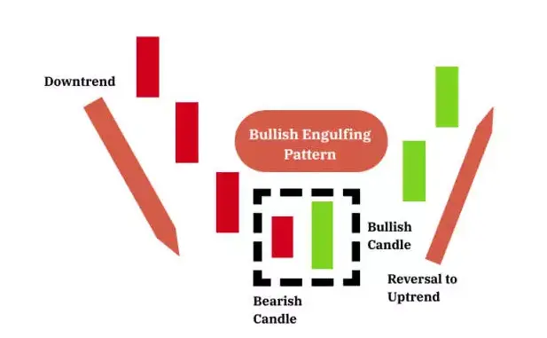
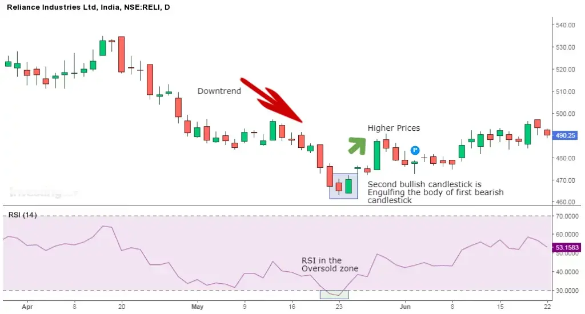

बियरिश इंगलफिंग पैटर्न बुलिश पैटर्न का उलट होता है।
यह एक उच्चतम अवधि में प्रकट होने पर बेचने वालों द्वारा मूल्यों में गिरावट की घोषणा करता है और उतार-चढ़ाव का उल्टा परिणाम होता है।
यह पैटर्न चल रहे ट्रेंड का उलटवर्ती होता है क्योंकि बेचने वाले और अधिक से अधिक बेचने वाले बाजार में शामिल होते हैं और मूल्यों को गिराने लगते हैं।
| What Does the Bearish Engulfing Look Like? |

| Trading Example: 1 |
ठीक उसी तरह जब बियरिश एंगल्फिंग पैटर्न के साथ ट्रेड करते हुए, निम्नलिखित बातों को याद रखना चाहिए:
